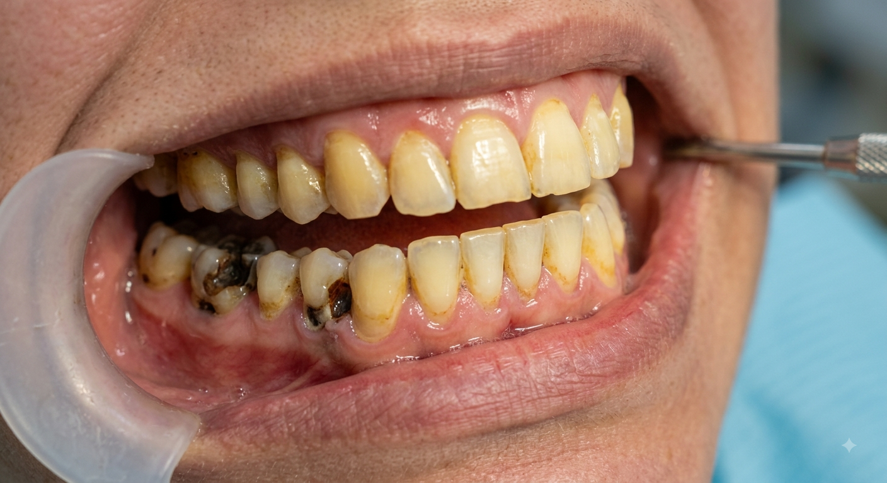

✨ رزرو آنلاین و سریع
نوبت بگیرید
خدمات مورد نظر خود را انتخاب کنید
گالری تصاویر قبل و بعد شما
نتایج درمانهای زیبایی شما در دنتورا

قبل بعد ایمپلنت
دکتر کاوه آذرخو
مرداد ۱۴۰۵
قبل
بعد
ونیر
دکتر امیرمحمد فرهمندنیا
تیر ۱۴۰۵
قبل
بعد
لمینت
دکتر مهسا امیری راد
خرداد ۱۴۰۵
تاریخچه نوبتهای گذشته
لیست مراجعات قبلی شما به دنتورا